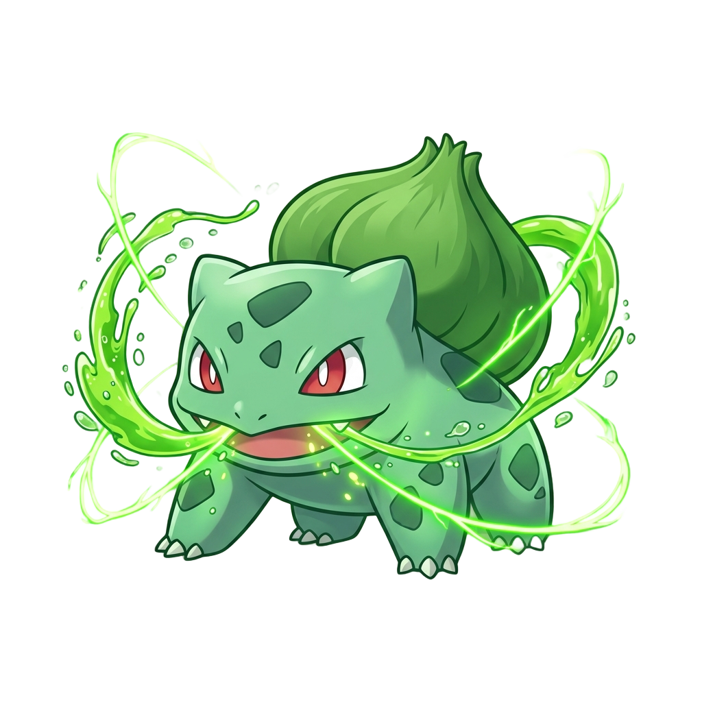

Selamat Datang di MyPokemon
Temukan dunia Pokemon anda!
.png)
Pikachu
Pikachu adalah salah satu karakter Pokemon yang paling terkenal. Dia adalah Pokemon tipe listrik yang memiliki kemampuan untuk menghasilkan listrik dari tubuhnya. Pikachu sering digambarkan sebagai teman setia Ash Ketchum dalam serial anime Pokemon.
.png)
Squirtle
Squirtle adalah salah satu karakter Pokemon yang paling terkenal. Dia adalah Pokemon tipe air yang memiliki kemampuan untuk menghasilkan air dari tubuhnya. Squirtle sering digambarkan sebagai teman setia Ash Ketchum dalam serial anime Pokemon.

Bulbasaur
Bulbasaur adalah salah satu karakter Pokemon yang paling terkenal. Dia adalah Pokemon tipe rumput dan racun yang memiliki kemampuan untuk menghasilkan tanaman dari tubuhnya. Bulbasaur sering digambarkan sebagai teman setia Ash Ketchum dalam serial anime Pokemon.
.png)
Charmander
Charmander adalah salah satu karakter Pokemon yang paling terkenal. Dia adalah Pokemon tipe api yang memiliki kemampuan untuk menghasilkan api dari tubuhnya. Charmander sering digambarkan sebagai teman setia Ash Ketchum dalam serial anime Pokemon.